EHR-R1: A Reasoning-Enhanced Foundational Language Model for Electronic Health Record Analysis
Shanghai Jiao Tong University · AntGroup · Peking University · Fudan University
EHR-Ins
~289K 추론 + ~3.53M 비추론 케이스, 42개 EHR 태스크를 커버하는 대규모 instruction 데이터셋
EHR-R1
3단계 학습으로 훈련된 추론 강화 LLM 시리즈 (1.7B / 8B / 72B)
EHR-Bench
MIMIC-IV 기반 42개 태스크, Decision-making + Risk-prediction 종합 벤치마크
EHR-R1-72B가 GPT-4o 대비 30점 이상 F1 성능 우위, EHRSHOT에서 zero-shot AUROC 10% 향상
Motivation
왜 EHR 분석에 새로운 접근이 필요한가?
EHR(Electronic Health Record)이란?
환자의 입원 기록, 검사 결과, 처방, 진단 등을 시간순으로 기록한 종합 디지털 의료 데이터입니다. EHR에는 정형 데이터(수치, 코드)와 비정형 데이터(임상 노트)가 혼재하며, 이를 분석하면 진단 지원, 위험도 예측, 임상 의사결정 지원 등 다양한 의료 AI 응용이 가능합니다. 그러나 데이터의 복잡성과 도메인 특수성 때문에 기존 LLM은 EHR 분석에 어려움을 겪어 왔습니다.
한계 1: Task Coverage 부족
기존 EHR 특화 모델들은 제한된 태스크(예: 특정 진단 분류)에만 집중하거나, 소수의 벤치마크만을 다루었습니다. 42개에 달하는 다양한 EHR 태스크를 통합적으로 지원하는 모델과 데이터셋이 부재했습니다. 결과적으로 실제 임상 현장의 다양한 요구사항을 충족시키기 어려웠습니다.
한계 2: Reasoning Ability 부족
기존 모델은 단순 패턴 매칭 수준에 머물러 복잡한 임상 추론(예: 다중 공존 질환 환자의 위험도 평가)이 어려웠습니다. EHR 분석에는 시간적 관계 이해, 의학 지식 활용, 다단계 추론이 필요하지만, 이를 체계적으로 학습시킬 고품질 reasoning 데이터가 존재하지 않았습니다.
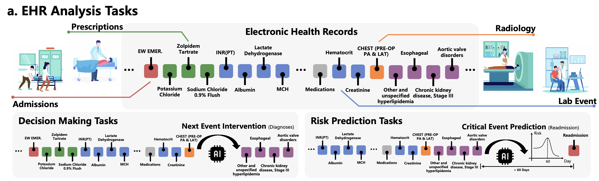
EHR-Ins & Thinking-Graph
대규모 EHR 추론 instruction 데이터는 어떻게 만들었는가?
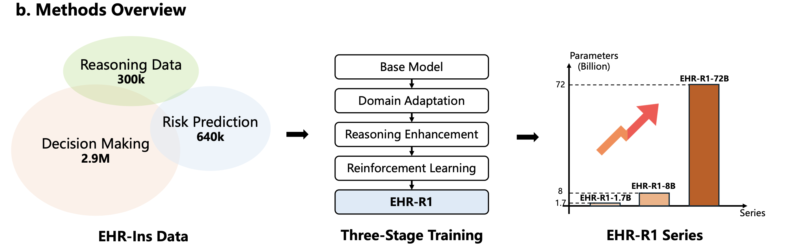
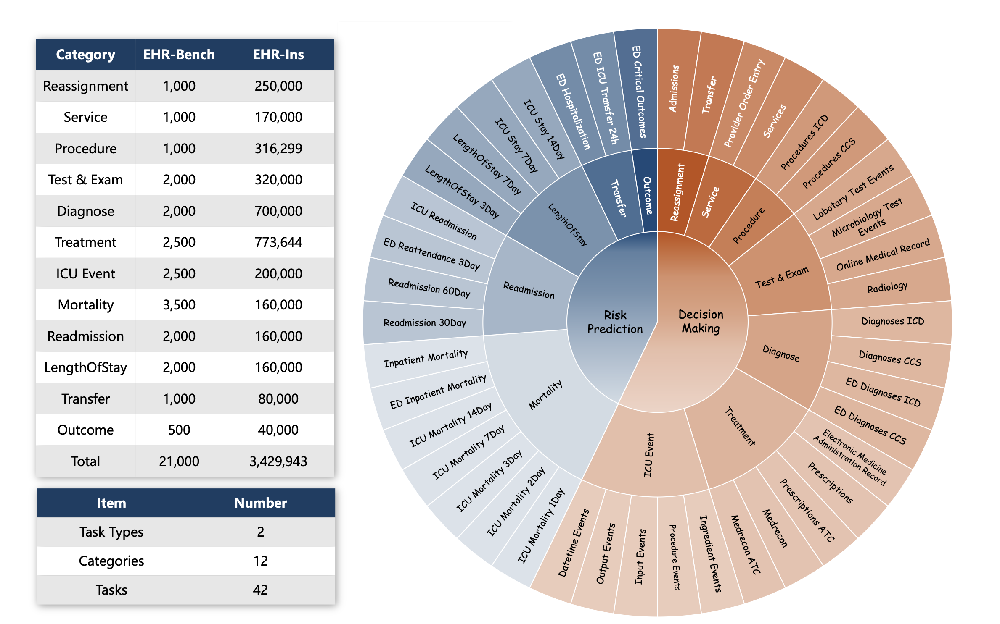
핵심 혁신: Thinking-Graph Pipeline
EHR 내 의료 엔티티(진단, 처방, 검사 등)를 식별하고 Lift score를 계산하여 태스크와의 관련성이 높은 핵심 엔티티를 선별합니다.
UMLS(Unified Medical Language System)를 활용한 그래프 탐색으로 선별된 엔티티 간의 의학적 관계와 인과 경로를 자동으로 발굴합니다.
GPT-4o를 활용하여 발굴된 의학적 관계를 기반으로 단계별 임상 추론 경로(thinking chain)를 합성하고, <think> 태그로 구조화합니다.
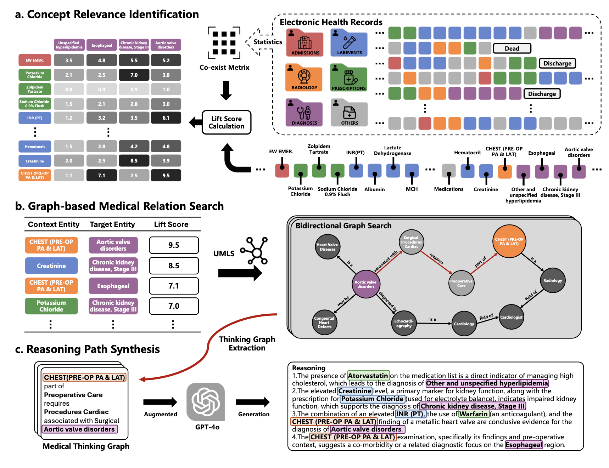
데이터 품질 검증
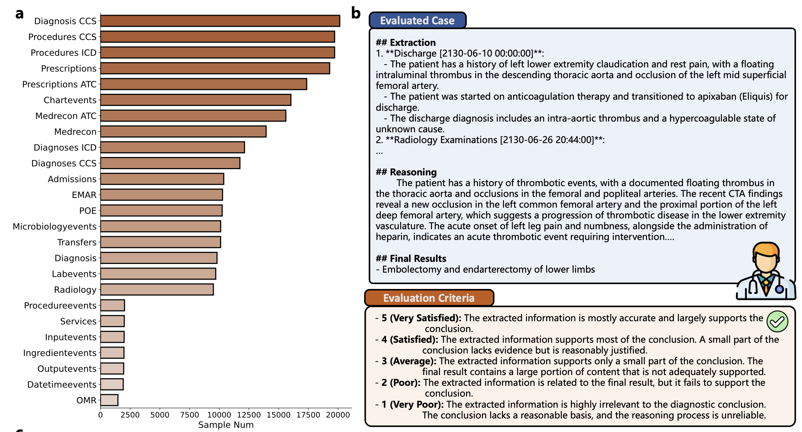
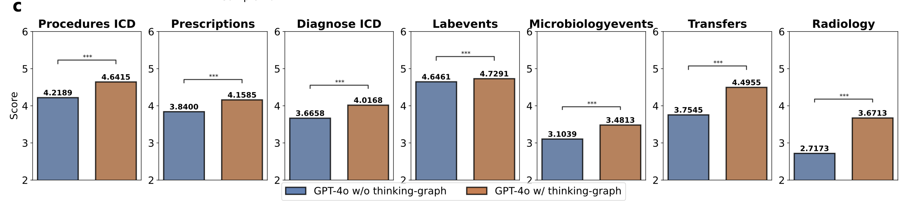
EHR-R1 Model
3단계 학습으로 EHR 추론 능력을 체계적으로 구축
(Qwen)
Adaptation
Enhancement
Learning
- ~3.53M non-reasoning SFT 데이터 활용
- Input + output 전체에 loss 계산
- 다양한 EHR 태스크 형식 학습
- 도메인 지식 및 출력 형식 습득
- 기초 EHR 분석 능력 구축
- ~289K reasoning SFT 데이터 활용
- <think> ... </think> 태그 구조 학습
- Thinking-Graph 생성 추론 경로 학습
- 단계별 임상 추론 능력 강화
- 의학 지식 기반 추론 내재화
- GRPO(Group Relative Policy Optimization) 적용
- Format reward: 출력 형식 준수 여부
- Accuracy reward: 정답 일치 여부
- 추론 품질 자동 피드백 최적화
- 모델 자체 교정 능력 향상
EHR-R1 모델 시리즈
경량 추론 모델. 제한된 컴퓨팅 환경에서의 EHR 분석, 온디바이스 배포에 적합.
성능과 효율의 균형. 중간 규모 임상 환경, 실시간 의사결정 지원에 적합.
최고 성능 플래그십 모델. GPT-4o 대비 30점 이상 F1 우위, EHRSHOT zero-shot AUROC 10% 향상.
Results
EHR-R1은 상용 및 오픈소스 LLM을 일관되게 능가
Decision-Making 성능 (Figure 4)
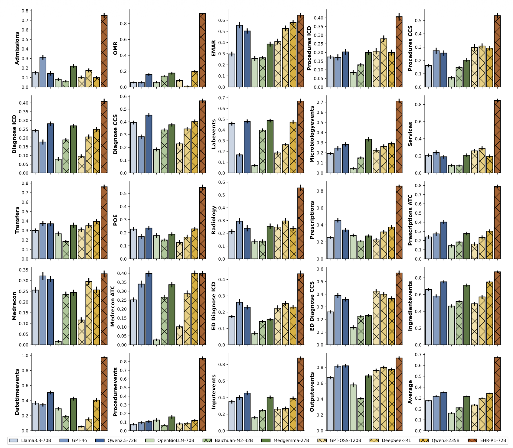
Risk-Prediction 성능 (Figure 5)
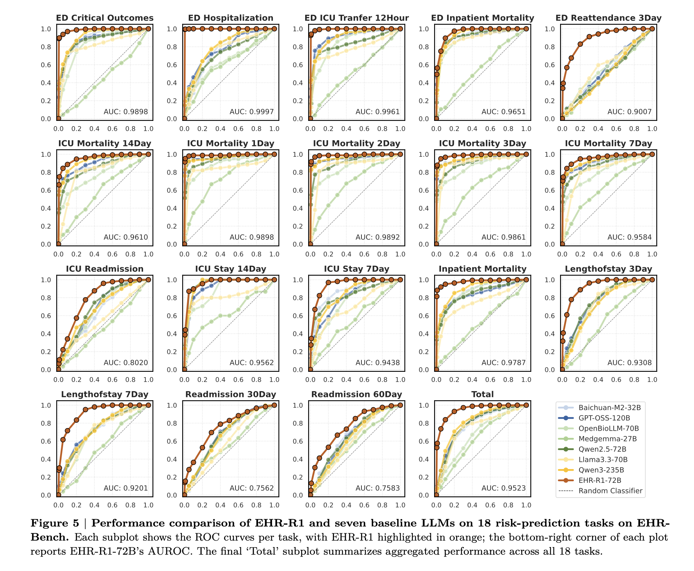
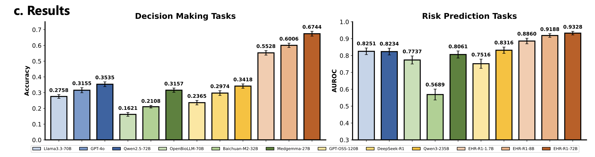
- 일반 reasoning ≠ EHR reasoning: DeepSeek-R1, Qwen3-235B 등 강력한 일반 추론 모델이 EHR-Bench에서 기대보다 낮은 성능을 보임. 의료 도메인 특화 reasoning 학습이 반드시 필요함.
- 상용 모델의 불안정성: GPT-4o는 일부 태스크에서 준수한 성능을 보이지만, 긴 EHR 시퀀스 처리 시 일관성이 떨어지고 태스크별 편차가 큼.
- 예측 기간이 길수록 어려움: 30일, 90일, 1년 등 예측 기간이 길어질수록 모든 모델의 AUROC가 감소. EHR-R1은 이 하락 폭이 가장 작아 장기 예측에 강점.
일반화 성능 (Generalization)
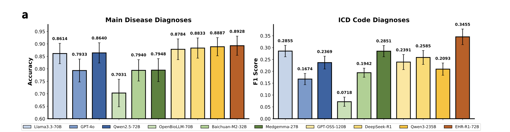
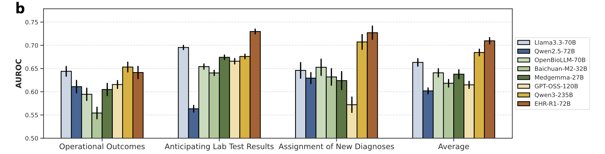
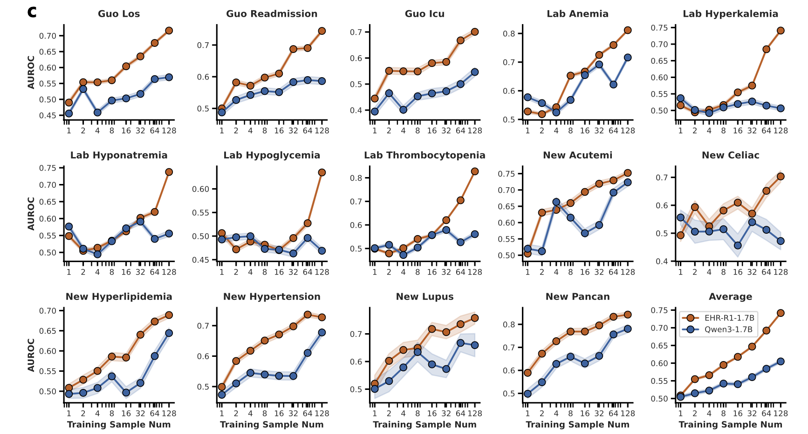
Ablation Study (Figure 7)
5가지 학습 설정을 3개 모델 스케일(1.7B, 8B, 72B)에서 비교하여 reasoning data, reasoning inference, 스케일링의 효과를 분리 분석.
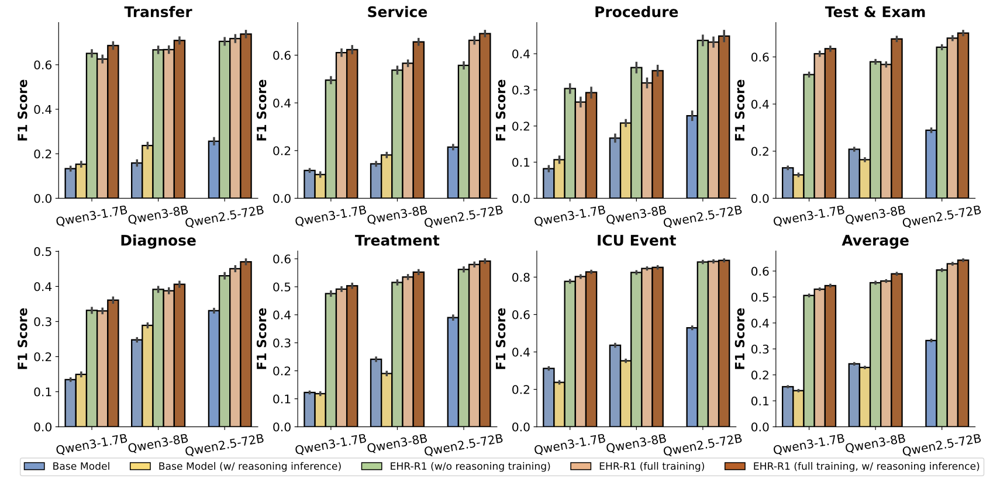
Stage 2의 reasoning 학습 데이터(~289K)를 제거하면 Decision-Making F1이 큰 폭으로 감소. Thinking-Graph가 생성한 고품질 추론 경로의 기여가 결정적임.
훈련된 모델에서 추론 시 <think> 태그를 비활성화하면 성능이 하락. 즉, 추론 능력이 파라미터에 내재화되어 inference time에도 활용됨을 확인.
1.7B -> 8B -> 72B로 모델 크기가 증가할수록 일관된 성능 향상. EHR 도메인에서도 스케일링 법칙이 유효하게 작동함을 실험적으로 검증.
Discussion
요약, 한계, 그리고 미래 방향
Key Takeaways
일반적인 대규모 언어 모델 능력만으로는 복잡한 EHR 분석에 충분하지 않습니다. Thinking-Graph 파이프라인을 통해 생성된 EHR 도메인 특화 추론 데이터(~289K)가 모델의 임상 추론 능력을 결정적으로 향상시켰으며, 이는 단순한 데이터 스케일 확대가 아닌 데이터 품질과 구조의 중요성을 시사합니다.
Domain Adaptation -> Reasoning Enhancement -> Reinforcement Learning의 순차적 3단계 학습은 각 단계가 이전 단계의 능력을 기반으로 점진적으로 발전하는 효과적인 전략임을 Ablation Study를 통해 검증했습니다. 특히 Stage 3의 GRPO는 이전 단계의 추론 능력을 더욱 정교하게 다듬어 최종 성능을 끌어올립니다.
EHR-R1은 학습 데이터(MIMIC-IV OMOP 형식)와 다른 분포의 데이터(CDM 형식)에서도 우수한 성능을 보이며, 외부 벤치마크인 EHRSHOT에서도 zero-shot 설정으로 기존 최고 성능 대비 AUROC 약 10% 향상을 달성했습니다. 이는 EHR-R1이 특정 데이터 형식이나 태스크에 과적합되지 않고 범용적인 EHR 이해 능력을 갖추었음을 의미합니다.
한계점
현재 reasoning data 합성은 decision-making 태스크에만 적용. Risk-prediction 태스크용 추론 데이터 생성 절차가 없어, 향후 이진 분류 태스크에 대한 명시적 추론 데이터 구축 방법 탐색이 필요.
Thinking-graph를 구축할 수 없는 샘플(엔티티 쌍 부족, UMLS 매핑 실패)은 제외됨. 이로 인해 일부 temporal data를 longitudinal narrative로 변환하지 못하는 한계. Entity linking 개선과 추가 지식 베이스 활용이 필요.
EHR 특화 학습이 모델의 범용 능력을 약화시킬 수 있음. Multi-domain continued pretraining, alternating-task curricula, modular adapters, MoE routing 등 전문성과 범용성의 균형을 맞추는 전략 탐색이 향후 과제.
Future Work
Decision-making에 국한된 reasoning synthesis를 binary classification 태스크로 확장하여 전체 42개 태스크에 추론 데이터를 제공하는 방향.
텍스트 기반 EHR 외에 의료 영상, 심전도, 병리 슬라이드 등 멀티모달 데이터를 통합한 종합적 EHR 분석 모델 개발.
MoE, modular adapters, alternating-task curricula 등을 활용하여 EHR 전문성을 유지하면서 범용 능력 손실을 최소화하는 학습 전략 연구.